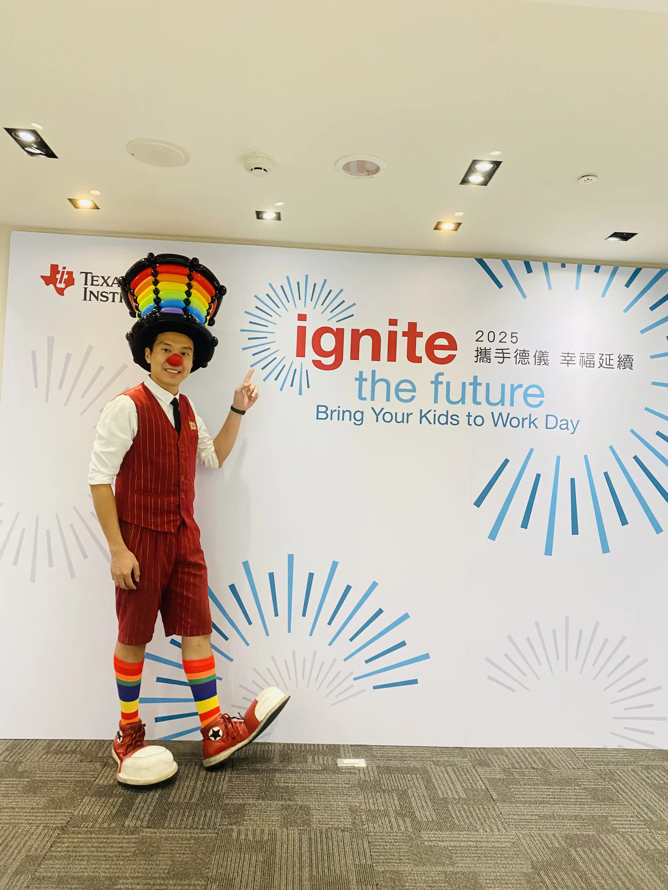
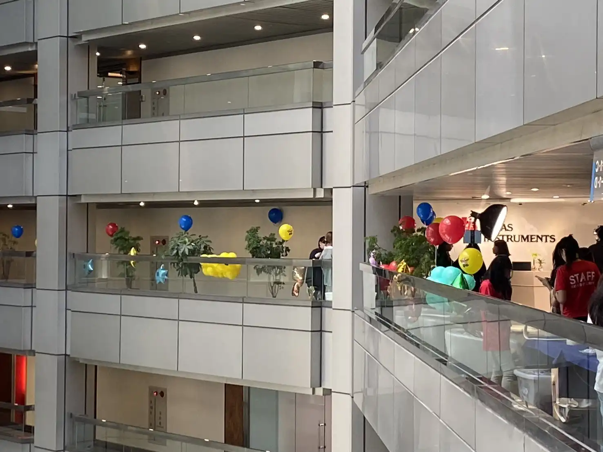
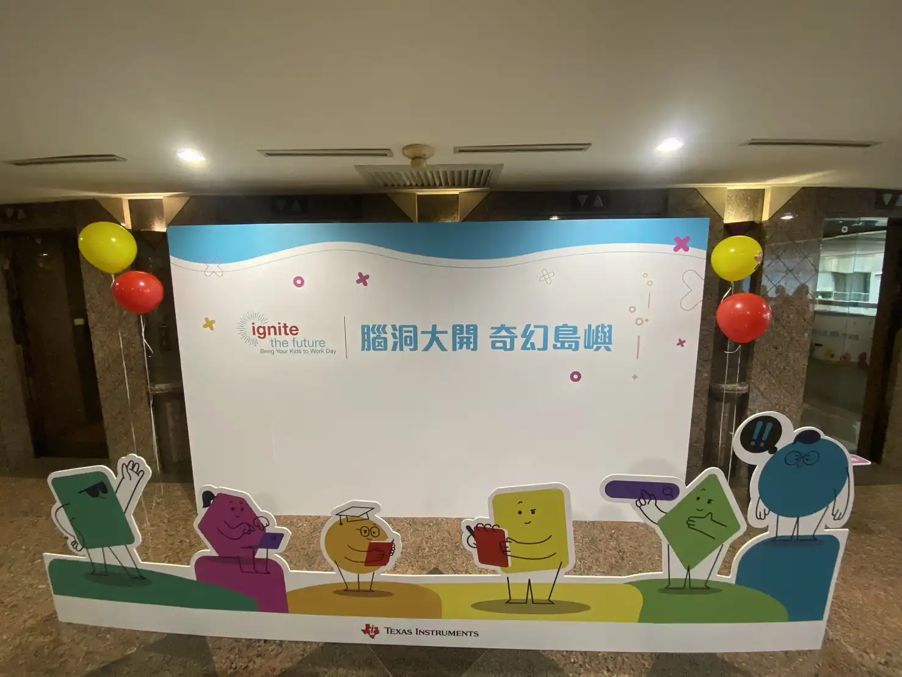
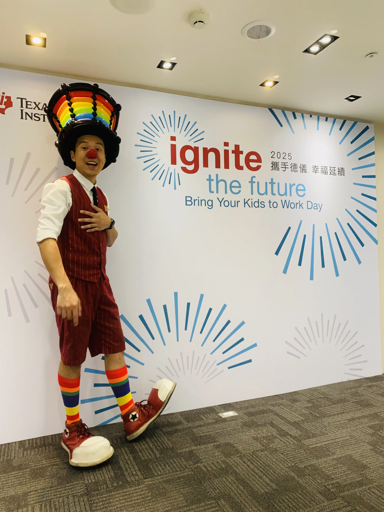

2025 台北德州儀器家庭日｜腦洞大開的氣球奇幻島紀實
深耕四載的默契 × 全球半導體領導品牌的信任｜氣球大叔 Sony 企業活動紀錄
📍 地點：德州儀器 (TI) 台北分公司
深耕四載：半導體菁英企業的一致選擇
能在同一家頂尖企業的年度盛事中連續現身，是實力最直接的證明。2025 年 8 月，氣球大叔 Sony 再次受邀踏入「德州儀器 (Texas Instruments)」台北分公司。今年已是大叔參與 TI 家庭日的 第四個年頭。能夠獲得這家強調精確與創新的全球領先企業長年青睞，我們倍感榮幸。

主題佈置：將科技辦公園區化為繽紛夢境
今年的家庭日以「腦洞大開 奇幻島嶼」為主題。為了呼應這一目標，Sony 特別規劃了層次豐富的 空飄氣球會場佈置。從進入辦公大樓的那一刻起，一顆顆色彩鮮明的氣球如同靈感種子般漂浮，將原本充滿科技感的專業空間，轉瞬轉化為充滿溫度的親子樂園。


職人手折：對準科技菁英家庭的高標期待
在德州儀器這類高品質要求的企業環境中，細節決定一切。氣球大叔的互動表演講求「精準、快速、精緻」。透過 「自由點餐」 的模式，我們現場將同仁與孩子天馬行空的想像具現化，不僅舒緩了工程師日常的忙碌，更創造了無價的親子互動時光。
「每年家庭日，小孩第一件事就是找氣球大叔在哪裡。看他折氣球真的有一種療癒感，造型也每年都有新驚喜！」

🔥 更多半導體龍頭與科技大廠推薦案例：
- 👉 護國神山盛事：台積電 TSMC 運動會｜220公分巨型氣球驚艷全場紀錄
- 👉 外商指定品牌：IKEA 台中 11 週年慶｜親子氣球互動魔術秀亮點
- 👉 全球化工領導：巴斯夫 BASF 親子日｜綠世界草地氣球互動演出
💡 關於台北企業家庭日氣球表演與佈置的常見問題
- Q: 企業家庭日或辦公室使用的空飄氣球安全嗎？會不會有爆炸的風險？
- A: 氣球大叔 Sony 嚴格遵守科技大廠的高階工安標準，我們在所有企業活動中僅使用絕對安全的惰性氣體「氦氣」。氦氣不可燃、不具毒性，絕對不會有爆炸風險。我們堅決拒絕使用廉價但具高度危險性的氫氣，確保活動現場的每一位同仁與眷屬都能在最安全的環境下同樂。
- Q: 家庭日的造型氣球表演可以讓現場員工與孩子自由指定喜歡的造型嗎？
- A: 當然沒問題！我們提供「職人級自由點餐」服務。不同於一般只能拿固定款式的表演，現場同仁與孩子可以根據自己的喜好自由發想。不管是當紅的動漫角色、可愛動物，或是特殊的創意要求，氣球大叔都能運用豐富的經驗，將天馬行空的想像即時具現化，創造獨一無二的驚喜。
- Q: 舉辦像德州儀器這樣大型的科技廠家庭日，氣球大叔能提供哪些一站式服務？
- A: 針對大型企業家庭日，我們提供全方位的氣球視覺與互動方案。除了高人氣的「定點造型氣球自由點餐」與「街頭魔術互動秀」之外，我們也包辦會場的迎賓空飄氣球佈置、主題拍照背板設計，以及舞台大型氣球裝置。一站式的專業服務能大幅減輕福委會的負擔，打造最具質感的企業盛會。
🏢 正在籌備科技廠慶、企業家庭日或大型品牌活動嗎？
讓福委會與公關企劃安心託付！大叔擁有豐富的全球百大企業合作經驗，提供符合高標工安與質感要求的整合方案：
- 👉 需要結合表演、迎賓與佈置的一站式企劃？ 請參考：企業家庭日 / 品牌活動整合方案
- 👉 只想單純預約超高人氣的現場氣球點餐派送？ 請參考：精緻造型氣球派送服務
📅 本文整理於 2025 年 8 月 15 日，完整紀錄德州儀器 (TI) 真實家庭日活動現場氛圍。